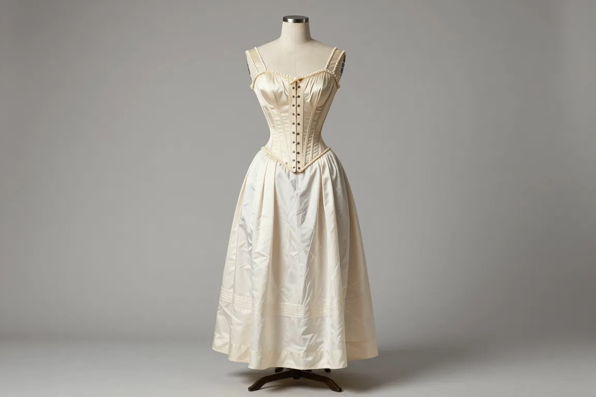

Det fabrikkproduserte korsettet fra viktoriansk tid. Det har coutil-stoff, en stålbusk, metalløyne og fjærstålbein, formet med kiler til et timeglass. Det ble båret under krinolinen og turnyren.

Kjerneidé
Kjolen er bare så god som fundamentet: et fast, formet korsett gir timeglasset som ytterstoffet så dekker.
Designprinsipper
Skjær korsettet i 8 til 12 paneler, og legg til en kile ved brystet og ved hoften for å gi kurven.
Lukk fronten med en stålbusk av to flate plater, og snør ryggen gjennom metalløyne.
Sett et bein eller en stålstrimmel i hver søm, og ett på hver side av busken og øynene.
Lag kroppen av coutil, en tett bomullsfiskebein-kypert som ikke strekker seg.
Reduser midjen 5 til 10 cm under den naturlige midjen; bruk en lang busk på 30 til 35 cm.
Legg til et trekk av sateng eller broché for syns skyld, med en smal blondekant øverst.
Bruk en enkel bomullsskjorte under korsettet og et korsettdeksel over det.